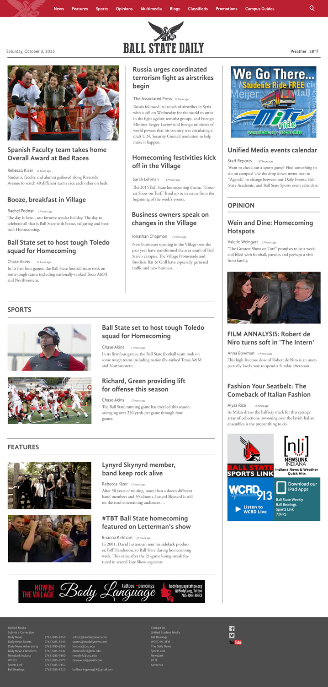

BALL STATE DAILY
Web design
This was primarily a personal exercise. While working at the University, I went to their Daily News website in an effort to look up some local information and, unfortunately, found it to be incredibly cumbersome, crowded and difficult to navigate. In an effort to be modern, the site had been overhauled to be incredibly image heavy. This resulted in a complete lack of hierarchy and readability. The site featured a of couple large images at the top of the page, followed by an image carousel, followed by a section labeled “top stories.” Links to articles were simply an image with a title laid over them, and the lack of ledes or white space made perusing, or even basic navigating surprisingly difficult.With my redesign, I sought to reinstate a sense of hierarchy and make it easier for a visitor to quickly scan the page, looking for interesting stories and important information. A sidebar now contains ads, both internal and external, as well as local events and opinion pieces. All information related to the newspaper staff and related media were relocated to a single location in the footer (they had been previously spread about in the header, a side bar and the footer). I also minimized the use of images in a effort to present a larger amount of stories “above the fold” while still maintaining a decent degree of white space.
